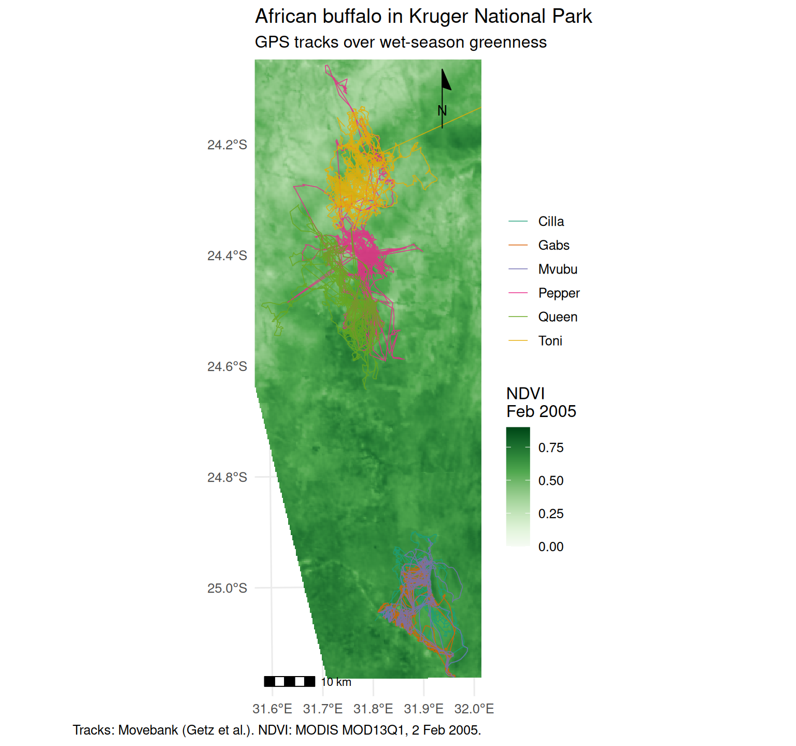

Practical 2 — The spatial survival kit
Session 2 · Spatial data in R
Goals. Turn a CSV into an sf object; reproject it and measure distances correctly; use the vector verbs you will need all course (st_buffer, st_join, st_intersection); load real NDVI and land-cover rasters with terra and sample them at the fixes; break things on purpose; and finish with a publication-quality map.
Time: ~80 minutes. Packages: sf, terra, dplyr, ggplot2, ggspatial.
Task 1 — From data frame to sf
track <- readr::read_csv("data/buffalo_kruger.csv.gz", show_col_types = FALSE) |>
transmute(id = `individual-local-identifier`, t = timestamp,
lon = `location-long`, lat = `location-lat`) |>
filter(!is.na(lon), !is.na(lat)) |>
distinct(id, t, .keep_all = TRUE) |>
arrange(id, t)
fixes <- st_as_sf(track, coords = c("lon", "lat"), crs = 4326, remove = FALSE)
fixes
#> Simple feature collection with 24663 features and 4 fields
#> Geometry type: POINT
#> Dimension: XY
#> Bounding box: xmin: 31.58639 ymin: -25.16421 xmax: 32.35671 ymax: -23.99802
#> Geodetic CRS: WGS 84
#> # A tibble: 24,663 × 5
#> id t lon lat geometry
#> * <chr> <dttm> <dbl> <dbl> <POINT [°]>
#> 1 Cilla 2005-07-14 04:35:00 31.8 -25.1 (31.80449 -25.06147)
#> 2 Cilla 2005-07-14 05:35:00 31.9 -25.0 (31.88776 -24.96738)
#> 3 Cilla 2005-07-14 07:35:00 31.9 -24.9 (31.85942 -24.94288)
#> 4 Cilla 2005-07-14 08:34:00 31.9 -24.9 (31.85512 -24.94914)
#> 5 Cilla 2005-07-14 09:35:00 31.9 -25.0 (31.85694 -24.95424)
#> 6 Cilla 2005-07-14 10:35:00 31.9 -24.9 (31.85977 -24.94735)
#> 7 Cilla 2005-07-14 11:34:00 31.8 -24.9 (31.84466 -24.93435)
#> 8 Cilla 2005-07-14 12:35:00 31.8 -24.9 (31.8441 -24.934)
#> 9 Cilla 2005-07-14 13:34:00 31.8 -24.9 (31.84463 -24.93442)
#> 10 Cilla 2005-07-14 14:35:00 31.9 -24.9 (31.857 -24.93371)
#> # ℹ 24,653 more rowsYour turn
1a. What CRS is this, in what units? 1b. What is the bounding box?
st_crs(fixes)$epsg
#> [1] 4326
st_is_longlat(fixes)
#> [1] TRUE
st_bbox(fixes)
#> xmin ymin xmax ymax
#> 31.58639 -25.16421 32.35671 -23.99802EPSG:4326, degrees — and st_is_longlat() returning TRUE is the flag that should make you stop before computing any distance or area.
Task 2 — Reproject, and measure one distance three ways
Kruger is in UTM zone 36S, EPSG:32736.
fixes_utm <- st_transform(fixes, 32736)
queen <- fixes |> filter(id == "Queen") |> slice(1:2)
xy <- st_coordinates(queen)
wrong <- sqrt(diff(xy[, 1])^2 + diff(xy[, 2])^2) # "distance" in degrees
geodesic <- st_distance(queen[1, ], queen[2, ]) # on the ellipsoid
projected <- st_distance(st_transform(queen, 32736)[1, ],
st_transform(queen, 32736)[2, ]) # in UTM metres
c(wrong_degrees = wrong, geodesic_m = as.numeric(geodesic),
projected_m = as.numeric(projected))
#> wrong_degrees geodesic_m projected_m
#> 2.835514e-03 3.014658e+02 3.009957e+02The first is not a distance at all: it mixes degrees of longitude and latitude, which are different lengths. The other two agree to a small fraction of a percent — UTM’s distortion inside a zone is under 0.1%.
For distances either works. For kernel densities, buffers and anything involving area, project first: those methods assume a plane.
Task 3 — Vector verbs: buffer, join, intersect
We need polygons to overlay. Build them from the land-cover raster: for each cell, which cover type dominates?
lc <- rast("data/kruger_landcover.tif")[[c("trees", "grassland", "shrubs")]]
dominant <- which.max(lc)
levels(dominant) <- data.frame(id = 1:3, cover = c("trees", "grassland", "shrubs"))
habitat <- as.polygons(dominant, dissolve = TRUE) |>
st_as_sf() |>
st_transform(32736)
habitat
#> Simple feature collection with 3 features and 1 field
#> Geometry type: MULTIPOLYGON
#> Dimension: XY
#> Bounding box: xmin: 337122.5 ymin: 7200872 xmax: 449667.9 ymax: 7356755
#> Projected CRS: WGS 84 / UTM zone 36S
#> cover geometry
#> 1 trees MULTIPOLYGON (((387178.5 73...
#> 2 grassland MULTIPOLYGON (((411785.8 73...
#> 3 shrubs MULTIPOLYGON (((405848 7355...
st_join() — which polygon is each fix in?
st_buffer() and st_intersection() — what is around the animal?
cilla_area <- fixes_utm |>
filter(id == "Cilla") |>
st_buffer(dist = 500) |> # 500 m around every fix
st_union() # one polygon: the area Cilla came near
used_hab <- st_intersection(habitat, cilla_area) |>
mutate(km2 = as.numeric(st_area(geometry)) / 1e6)
used_hab |> st_drop_geometry() |> select(cover, km2)
#> cover km2
#> 1 trees 2.424118
#> 2 grassland 221.503730
#> 3 shrubs 1.848077Your turn
3a. Compare the habitat composition of Cilla’s area with that of the whole landscape. 3b. Why must habitat and cilla_area be projected here?
study <- st_as_sfc(st_bbox(habitat))
landscape <- st_intersection(habitat, study) |>
mutate(km2 = as.numeric(st_area(geometry)) / 1e6)
left_join(
landscape |> st_drop_geometry() |> transmute(cover, landscape = km2 / sum(km2)),
used_hab |> st_drop_geometry() |> transmute(cover, cilla = km2 / sum(km2)),
by = "cover"
) |>
mutate(across(c(landscape, cilla), \(z) round(z, 3)),
ratio = round(cilla / landscape, 2))
#> cover landscape cilla ratio
#> 1 trees 0.245 0.011 0.04
#> 2 grassland 0.424 0.981 2.31
#> 3 shrubs 0.331 0.008 0.02A ratio above 1 means Cilla’s surroundings contain more of that cover than the landscape does. This used-versus-available comparison is the seed of Session 7.
Both layers must be projected because st_buffer(dist = 500) needs metres (in degrees, 500 would be absurd) and st_area() of a union of buffers assumes a plane. sf would compute geodesic areas on 4326, but buffering in degrees produces ellipses, not circles.
Task 4 — Rasters with terra: NDVI
data/kruger_ndvi_2005.tif holds two MODIS 16-day NDVI composites (MOD13Q1, 250 m) over the buffalo range: one from the wet season and one from the dry season of 2005.
ndvi <- rast("data/kruger_ndvi_2005.tif")
ndvi
#> class : SpatRaster
#> size : 481, 463, 2 (nrow, ncol, nlyr)
#> resolution : 0.002432149, 0.002432149 (x, y)
#> extent : 31.41276, 32.53885, -25.1657, -23.99583 (xmin, xmax, ymin, ymax)
#> coord. ref. : lon/lat WGS 84 (EPSG:4326)
#> source : kruger_ndvi_2005.tif
#> names : ndvi_2005_02_02, ndvi_2005_09_14
#> min values : -0.198494, -0.198628
#> max values : 0.852371, 0.599399plot(ndvi, col = hcl.colors(50, "Greens", rev = TRUE), range = c(0, 0.9))
Your turn
4a. What is the resolution in metres? What CRS is it in? 4b. Extract both NDVI layers at every buffalo fix.
About 230 m east–west and 230 m north–south — MODIS’s 250 m product, delivered here in longitude/latitude.
fixes$ndvi_wet <- terra::extract(ndvi[["ndvi_2005_02_02"]], vect(fixes))[, 2]
fixes$ndvi_dry <- terra::extract(ndvi[["ndvi_2005_09_14"]], vect(fixes))[, 2]
summary(st_drop_geometry(fixes)[, c("ndvi_wet", "ndvi_dry")])
#> ndvi_wet ndvi_dry
#> Min. :0.2920 Min. :0.1570
#> 1st Qu.:0.4985 1st Qu.:0.2108
#> Median :0.5859 Median :0.2391
#> Mean :0.5674 Mean :0.2401
#> 3rd Qu.:0.6426 3rd Qu.:0.2656
#> Max. :0.7435 Max. :0.3927
#> NAs :1 NAs :1The same places are far greener in February than in September. Which value belongs to which fix depends on when the fix was taken — Session 3 does that matching properly.
Task 5 — Break it on purpose
Two silent failures worth recognising for the rest of your career.
A bare coordinate matrix has no CRS
ndvi_utm <- project(ndvi, "EPSG:32736")
# Both objects carry a CRS: terra reprojects for you, with a warning
ok <- terra::extract(ndvi_utm[[1]], vect(fixes))
mean(is.na(ok[, 2]))
#> [1] 4.054657e-05
# A bare matrix carries none: degrees are read as metres
bad <- terra::extract(ndvi_utm[[1]], st_coordinates(fixes))
mean(is.na(bad[, 1]))
#> [1] 1Every value NA, no error, no warning. Keep coordinates in objects that carry their CRS.
extract(buffer = ) is ignored for points
The “2 km mean” is the at-fix value, unchanged. Build buffer polygons yourself:
When an argument is supposed to change the answer, check that it did. identical() costs one line.
Note also what smoothing does: the 2 km mean has less variance than the at-fix value. Here the reduction is modest, because savanna greenness varies mostly at scales larger than 2 km; for a patchier covariate it can be large. Either way, smoothing shrinks the contrast between used and available places. The buffer radius is a hypothesis about perception — choose it from biology, not from whichever radius gives the smallest p-value.
Task 6 — Mini-challenge: a map worth publishing
library(ggspatial)
ndvi_df <- as.data.frame(ndvi_utm[["ndvi_2005_02_02"]], xy = TRUE, na.rm = TRUE)
names(ndvi_df)[3] <- "ndvi"
paths <- fixes_utm |>
group_by(id) |>
summarise(do_union = FALSE) |>
st_cast("LINESTRING")
# Frame the map on where the animals are (robust to a stray fix), plus a margin
xy <- st_coordinates(fixes_utm)
lims_x <- quantile(xy[, 1], c(0.001, 0.999)) + c(-4000, 4000)
lims_y <- quantile(xy[, 2], c(0.001, 0.999)) + c(-4000, 4000)
ggplot() +
geom_raster(data = ndvi_df, aes(x, y, fill = ndvi)) +
scale_fill_gradientn(colours = hcl.colors(9, "Greens", rev = TRUE),
limits = c(0, 0.9), name = "NDVI\nFeb 2005") +
geom_sf(data = paths, aes(colour = id), linewidth = 0.3, alpha = 0.85) +
scale_colour_brewer(palette = "Dark2", name = NULL) +
annotation_scale(location = "bl", width_hint = 0.25) +
annotation_north_arrow(location = "tr", style = north_arrow_minimal()) +
coord_sf(crs = 32736, xlim = lims_x, ylim = lims_y, expand = FALSE) +
labs(title = "African buffalo in Kruger National Park",
subtitle = "GPS tracks over wet-season greenness",
caption = "Tracks: Movebank (Getz et al.). NDVI: MODIS MOD13Q1, 2 Feb 2005.") +
theme_minimal(base_size = 12) +
theme(axis.title = element_blank(), legend.position = "right")
One straight line leaves the frame towards the north-east. That is a single corrupt fix more than 60 km away — the buffalo did not go there and back in an hour. A good map shows you problems in the data before any model does; Session 3 removes this fix properly.
Your own version of this map, as a PNG at print resolution (ggsave("map.png", width = 17, height = 15, units = "cm", dpi = 300)), plus the .qmd that makes it. It must have: a projected CRS, a scale bar, a legend with units, a caption crediting the data, and colours that survive greyscale printing. Choose a different layer or animal from the one above.
Self-check
st_crs(x) <- 32736 on an object whose coordinates are longitude/latitude. What have you done?
Assigning a CRS only writes a label. 31.8 and −24.5 are now read as metres from the UTM 36S origin — a point off West Africa. It fails silently, which is what makes it dangerous. st_transform() changes coordinates.
You st_join() 20,000 fixes to a habitat layer and get back 20,412 rows. Why?
st_join() is a spatial left join: one output row for every match. A point on a shared boundary, or inside overlapping polygons, matches twice. Always compare row counts before and after a join, and use largest = TRUE (for polygons) or clean the polygon layer so it tiles without overlaps.
Before Session 3
- Make sure
library(amt)andlibrary(adehabitatLT)both load.